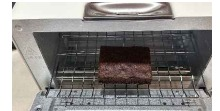
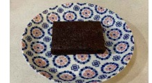
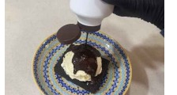
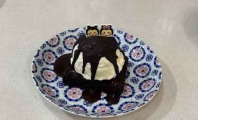

| 메뉴명 | 아그작 바닐라 브라우니 |
|---|
| 판매가격 | 6,500원 |
|---|
| 원재료 | 브라우니, 바닐라 아이스크림, 초코쉘, 초코픽 |
|---|
| 사용 부자재 | 덮밥접시, 포크 |
|---|
| 메뉴특징 | 진한 브라우니 위에 바닐라 아이스크림, 초코를 깨먹는 재미를 더한 달콤한 디저트 |
|---|
※ 제조 후 최대한 빨리 제공할 것.
조리방법

1
냉동 브라우니 1개를 토스트기 그릴 위 중앙에 올린다.
3
<바게트 모드>로 다이얼을 돌려 6분간 조리한다.
※ 발뮤다, 오븐렌지 조리방법 p.21참조

4
덮밥접시에 구운 브라우니를 올린다.
※ 뜨거우니, 집게 사용하기!

5
아이스크림 1스쿱(140g)을 올리고 녹은 초코쉘을 흔들어 섞어준 뒤 아이스크림 위에 15g을 뿌려준다.

6
초코쉘이 굳기 전에 초코픽을 꽂아 완성한다. (포크, 물티슈 제공)
*초코쉘을 포크로 깨서 먹는 메뉴라 설명한다.